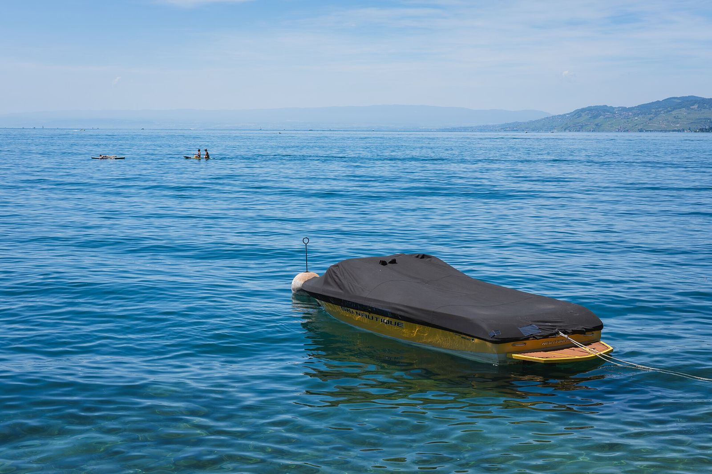

En bref
Derrière un bateau, c’est un lac lisse qui fait une belle session : dans Mon Lac, le wakeboard et le ski nautique sont « Parfaits » jusqu’à 15 km/h de rafales, le wakesurf jusqu’à 10 km/h. Selon le canton de Genève, la pratique est libre sur le Léman, dans le respect des règles de sécurité. Écoles et clubs vérifiés ci-dessous, de Genève à Montreux et sur la rive française.
Pourquoi faut-il un lac lisse ?
Le wakeboard et le ski nautique se pratiquent tirés par un bateau ; le wakesurf, lui, se surfe sur la vague du sillage, sans corde. Le clapot brouille cette vague et rend la glisse inconfortable. Les repères de l’app :
- Wakeboard et ski nautique : « Parfait » jusqu’à 15 km/h de rafales, « Bien » jusqu’à 25, « Bof » jusqu’à 32.
- Wakesurf : plus exigeant, « Parfait » jusqu’à 10 km/h, « Bien » jusqu’à 18, « Bof » jusqu’à 25.
La pluie ou un air sous 10 °C font perdre un cran. Les matins calmes sont souvent les meilleurs.
Où faire du wakeboard, du wakesurf ou du ski nautique ?
- Tropical Corner, Cologny (de avril à octobre), près de Tropical Corner : École de windsurf depuis 1981 : location de planches et de paddles, ponton de wakeboard.
- GenevaBoats, Genève, près de Bains des Pâquis : Bateaux avec ou sans skipper depuis le quai du Mont-Blanc ; sorties wakeboard, wakesurf et ski nautique avec pilote.
- Pieds dans l’O, Lausanne, près de Lausanne – Ouchy : Au vieux port d’Ouchy : pédalos, bateaux électriques ou à moteur, wakeboard et ski nautique.
- Wakeboard Geneva, Pregny-Chambésy, près de Pregny-Chambésy : École de wakeboard et de wakesurf à la plage du Reposoir, ski nautique et bouée aussi.
- Water Sports Montreux, Montreux, près de Veytaux : Un des plus anciens clubs de sports nautiques de Suisse, ponton à Territet : wakeboard, wakesurf et ski nautique, matériel compris.
- W-school, Thonon-les-Bains, près de Thonon : Sur la plage municipale, quai de Ripaille : wakesurf, wakeboard, ski nautique, foil et wing.
- Poolsnap, Sciez, près de Sciez : École de ski nautique au port de Sciez, spécialisée wakesurf et wakeboard, du débutant à l’expert.
- Wake Up, Cologny (de avril à octobre), près de Cologny : École de wakeboard et de wakesurf au quai de Cologny, tous les jours sur demande d’avril à octobre.
- Fit Wake, Genève, près de Bains des Pâquis : Sessions de wakeboard et de wakesurf depuis le quai Wilson, en pleine rade.
- Ski Nautique Club Lausanne, Lausanne, près de Lausanne – Ouchy : Club d’Ouchy depuis 1966, ponton de la Tour Haldimand : cours de ski nautique, wakeboard et wakesurf ouverts aux non-membres.
Tarifs, saisons et horaires sont à vérifier auprès de chaque école.
Faut-il un permis ?
Pour une sortie avec une école ou un pilote, non : c’est lui qui conduit le bateau. Le canton de Genève précise que la pratique est libre sur le Léman, et que les règles visent la sécurité des autres usagers ; elles concernent surtout ceux qui utilisent leur propre bateau.
L’eau du Léman en ce moment
La température de chaque plage est dans l’app Mon Lac, mise à jour toutes les trois heures.